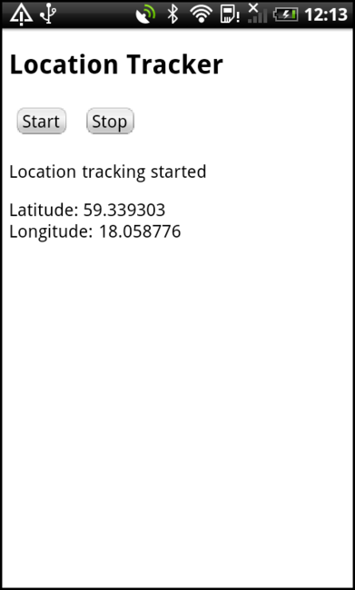

The WebViewGeoLocation application displays your current location, as returned by EVENT_TYPE_LOCATION events. This example is useful for understanding the basic mechanisms for communicating between JavaScript and C++.

This example is included in the MoSync SDK installation in the /examples folder. For information on importing the examples into your workspace, see Importing the Examples.
You will find the latest version of the source code of the app at the MoSync GitHub repository.
When this application starts up on an Android of iOS device, the main screen is displayed. Touch the Start button to start tracking the current latitude and longitude of the device. Touch the Stop button to stop tracking.
The purpose of the example is to demonstrate how to communicate between JavaScript in a WebView widget and C++ code, by using basic low-level syscalls and events.
(Other WebView examples, such as WebViewTwitter, demonstrate how to use the high-level MoSync Wormhole Library for such communications.)
The application is implemented in C++, HTML and JavaScript. It has an explicit event loop, rather than using a Moblet, to let you see how the basic event mechanism that handle messages from JavaScript works.
The user interface for this application is created in HTML: to keep the example code to a minimum, the example uses only very basic HTML tags and no CSS.
When the program starts, a single WebView widget is created. The HTML and JavaScript code is stored in a text file and packaged with the application as a binary resource. That resource is extracted when the program starts, and the web view is set to display that data. This is done in C++ code, in file GeoLocation.cpp.
The communication mechanism for invoking C++ code from JavaScript is based on the MAW_EVENT_WEB_VIEW_HOOK_INVOKED event (note that in MoSync 2.7, the URL hook mechanism was used, this method is still available, but is not supported to the full extent on Windows Phone 7).
In file Resources/index.html, the following JavaScript code is evaluated when clicking the Start button:
mosync.bridge.sendRaw("StartTrackingGeoLocation");
The result will be that a MAW_EVENT_WEB_VIEW_HOOK_INVOKED is posted to the MoSync event queue, and the following C++ code in WebViewGeoLocation.cpp is called:
case EVENT_TYPE_WIDGET:
handleWidgetEvent((MAWidgetEventData*) event.data);
break;
In the handleWidgetEvent method the following code gets called, which causes location tracking to start, and location events to be sent to the event queue:
if (0 == message.find("StartTrackingGeoLocation"))
{
maLocationStart();
}
When a location event is sent, the following code is used to communicate the location back to JavaScript to update the web page:
case EVENT_TYPE_LOCATION:
handleGeoLocationEvent((MALocation*) event.data);
break;
void handleGeoLocationEvent(MALocation* location)
{
char script[512];
sprintf(
script,
"javascript:GeoLocationUpdated('%f','%f');",
location->lat,
location->lon);
maWidgetSetProperty(mWebView, "url", script);
}
Calling maWidgetSetProperty on a WebView widget, with the property "url" set to a string that has the "javascript:" scheme will cause that JavaScript code to be evaluated in the web view.
By using the above techniques, you can communicate asynchronously between JavaScript and C++ code.
The JavaScript object moync.bridge is also defined in index.html. Note that this is a stripped-down version of the mosync-bridge object included in the Wormhole JavaScript Library (wormhole.js).
This example is intended to be a low-level example that illustrates the basic mechanism of communication between JavaScript and C/C++. In most cases it should be much more convinient to use the higher-level Wormhole library, which encapsulates and abstracts away low-level details and platform differences.